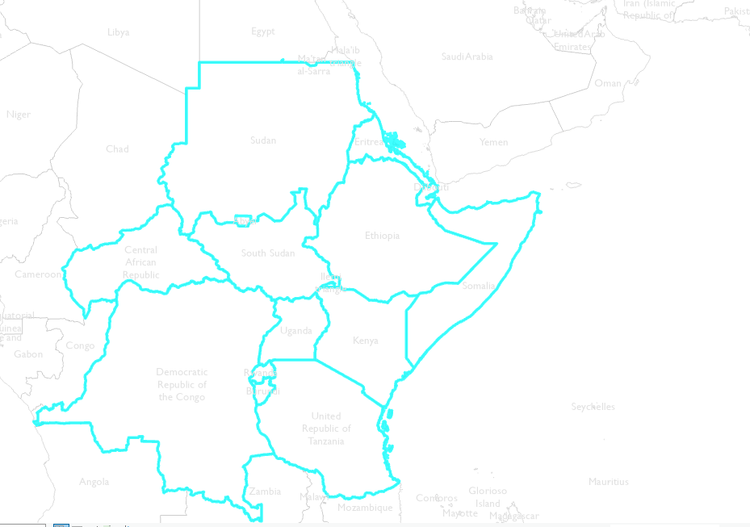

Technical Requirements and Resources
This section will guide you through the essential aspects of what
you’ll need in terms of hardware, software, and data resources to make
the most of this hackathon experience. The goal is to ensure you have
the tools and knowledge required to delve into the complex world of
climate change and human mobility in the East and Horn of Africa
region.
This section will guide you through the essential aspects of what
you’ll need in terms of hardware, software, and data resources to make
the most of this hackathon experience. The goal is to ensure you with
the tools and knowledge required to delve into the complex world of
climate change and human mobility in the East and Horn of Africa
region.
From hardware recommendations to software options and a detailed
breakdown of available datasets, this guide is designed to assist both
novice and experienced participants in navigating the technical
landscape of our hackathon. Whether you’re a coding enthusiast, a GIS
specialist, or a data visualization wizard, we’re hopeful you’ll find
valuable insights here to help you excel in this Hackathon.
Hardware requirements
Participants are encouraged to bring their own laptops or devices for
data analysis. It’s recommended to have a device capable of running the
chosen data analysis software.
Recommended software
As part of your welcome pack, you will have access to Google Colab, a
powerful cloud-based platform. Google Colab offers a range of advantages
and resources that make it an excellent choice for data analysis:
- Free Cloud-Based Platform: Eliminate the need for
local software installation; access your analysis environment from
anywhere.
- Access to GPU Acceleration: Supercharge
computationally intensive tasks with GPU support.
- Collaborative Features: Real-time collaboration for
seamless teamwork.
- Preinstalled Libraries: Colab comes with a wealth
of data science libraries for Python, including NumPy, Pandas,
Matplotlib, and Scikit-Learn, making it effortless to start your data
analysis journey.
- Data Visualization: Create interactive data
visualizations with libraries like Plotly and Seaborn.
You have the freedom to choose software tools and programming
languages that suit your expertise and research goals. Options include
Python, R, or specialized GIS software like ArcGIS or QGIS. Your choice
should align with the specific demands of your research project.
If you prefer using Integrated Development Environments (IDEs) like
Visual Studio or PyCharm, you are welcome to do so. However, please note
that while we support your choice, we may not be able to provide
technical support on version compatibility for these IDEs.
Resources and Links
- Tutorials and resources on Google Colab:
- Data Preparation and Visualization Resources:
- Data Cleaning with Pandas (Python): Link
1, Link
2
- Data Visualization with Python: Link
- Data Visualization with ggplot2 (R): Link
- How to Visualize data in maps Using Geopandas Links
- Working with Geospatial Data in R: Link
- Data Viz Gallery with scripts: Link
Data for hackathon?
Participants will have access to Displacement Tracking Matrix (DTM)
dataset related to the East and Horn of Africa region. These datasets
will include information on displacement, climate-related factors,
population movements, and more. Here is a list of the datasets you’ll
have access to, all georeferenced to Admin 1 for the region of interest.
The temporal dimension under consideration for the external data is
2000-2020.
Table of Data Sources
| Socio-Economic |
Net migration (= total in-migration into area minus total
out-migration from area) |
Source |
| Socio-Economic |
Population count |
Source |
| Socio-Economic |
GDP per capita |
Source |
| Socio-Economic |
Human Development Index |
Source |
| Socio-Economic |
Proportion of females aged 0 to 19 (among total (= all sexes, all
ages) population) |
Source |
| Socio-Economic |
Proportion of females aged 20 to 64 |
Source |
| Socio-Economic |
Proportion of females aged 65 and above |
Source |
| Socio-Economic |
Proportion of males aged 0 to 19 |
Source |
| Socio-Economic |
Proportion of males aged 20 to 64 |
Source |
| Socio-Economic |
Proportion of males aged 65 and above |
Source |
| Climate |
Mean temperature of the warmest month |
Source |
| Climate |
Mean temperature of the coldest month |
Source |
| Climate |
Mean annual temperature |
Source |
| Climate |
Precipitation of the driest month |
Source |
| Climate |
Precipitation of the wettest month |
Source |
| Climate |
Annual precipitation |
Source |
| Climate |
Annual number of wet days |
Source |
| Climate |
Aridity (annual precipitation ÷ potential evapotranspiration) |
Source |
| Food Security |
Mean annual food insecurity |
Source |
| Hazard |
Land fraction at risk of heatwave |
Source |
| Hazard |
Land fraction at risk of wildfire |
Source |
| Hazard |
Land fraction at risk of drought |
Source |
| Hazard |
Land fraction at risk of river flood |
Source |
| Hazard |
Land fraction at risk of tropical cyclone |
Source |
| Hazard |
Land fraction at risk of crop failure |
Source |
| Land Use |
Land fraction covered by cropland |
Source |
| Land Use |
Land fraction covered by pasture |
Source |
| Land Use |
Land fraction covered by rangeland |
Source |
| Land Use |
Land fraction covered by built-up land (cities, towns, …) |
Source |
| Migration |
Flow Monitoring Data: Flow monitoring aims to derive quantitative
estimates of the flow of individuals through specific locations and to
collect information about the profiles, intentions, and needs of the
people moving. This component is well suited to quantifying highly
mobile populations and providing a picture of complex mobility
dynamics. |
Source |
| Displacement |
Mobility Tracking Data: Mobility tracking aims to quantify the
presence of population categories of interest, reasons for displacement,
length of displacement, and needs within defined geographical areas and
locations, with a frequency that captures mobility dynamics |
Source |
| Conflicts |
Armed Conflict Location & Event Data Project (ACLED): The Armed
Conflict Location & Event Data Project (ACLED) collects real-time
data on the locations, dates, actors, fatalities, and types of all
reported political violence and protest events around the world |
Source |
The use of own/external data?
While the primary focus will be on DTM datasets, participants are
encouraged to supplement their research with other publicly available
data sources if relevant to their research questions.
Countries in Eastern Horn of Africa

What is Admin Level?
The concept of “admin_level” is used in geography and mapping to
categorize and describe different levels of administrative divisions
within a country or region. They mostly range from Admin 0 to Admin
10.
Here’s a simple breakdown:
- Country Level (admin_level 0): At the top level, you have the entire
country or region. For example, in the United States, this would be the
entire country.
- State or Province Level (admin_level 1): Inside the country, you
have states or provinces. Think of these as slightly smaller boxes
within big country box. For example, in the United States, you might
have states like California or New York.
- County or District Level (admin_level 2): Within states or
provinces, you have counties or districts. These are even smaller boxes,
like subdivisions within the states. In California, you could have
counties like Los Angeles or San Francisco.
More resources: Admin Level
on OpenStreetMap
Internet Access
Will there be internet access available during the hackathon for data
retrieval or online research?
- Yes, participants will have access to the internet to retrieve
additional data, conduct research, and access online resources as needed
for their projects.
Mentors and Experts
Will there be mentors or experts available to assist with technical
challenges or data-related questions?
- Yes, there will be mentors or experts on hand to provide guidance,
answer technical questions, and assist participants with any challenges
related to data analysis and software usage.
Data Privacy and Ethics
Will there be any data privacy or ethical considerations when working
with sensitive data?
- Participants will be expected to adhere to ethical guidelines and
data privacy regulations when working with sensitive data. Organizers
will provide guidance on these considerations.
References and Publications
- Wood, T. (2022). The role of free movement agreements in addressing
climate mobility. Forced Migration Review, (69).
- Castillejo, C. (2019). The influence of EU migration policy on
regional free movement in the IGAD and ECOWAS regions (No. 11/2019).
Discussion paper.
- Maru, M. T. (2021). Migration policy-making in Africa: determinants
and implications for cooperation with Europe. Robert Schuman Centre for
Advanced Studies Research Paper, (2021/54).
- Black, R. (2004). Migration and pro-poor policy in Africa.
- Afifi, T., Govil, R., Sakdapolrak, P., & Warner, K. (2012).
Climate change, vulnerability and human mobility: Perspectives of
refugees from the East and Horn of Africa. Bonn: United Nations
University, Institute for Environment and Human Security (UNU-EHS).
- Hoffmann, R. (2022). Contextualizing climate change impacts on human
mobility in African drylands.
- Zickgraf, C. (2019). Climate change and migration crisis in Africa.
The Oxford handbook of migration crises, 347.
- Thalheimer, L., Williams, D. S., Van der Geest, K., & Otto, F.
E. (2021). Advancing the evidence base of future warming impacts on
human mobility in African drylands. Earth’s Future, 9(10),
e2020EF001958.
- Morrissey, J. (2013). Environmental change and human migration in
Sub-Saharan Africa. In People on the move in a changing climate: the
regional impact of environmental change on migration (pp. 81-109).
Dordrecht: Springer Netherlands.
- Warner, K., & Afifi, T. (2014). Enhancing adaptation options and
managing human mobility: the United Nations framework convention on
climate change. Social research, 81(2), 299-326.
- Hastrup K, & Fog Olwig K. (2012). Climate Change and Human
Mobility.
- Mueller, V., Sheriff, G., Dou, X., & Gray, C. (2020). Temporary
migration and climate variation in eastern Africa.
- Li, Q., & Samimi, C. (2023). Assessing Human Mobility and Its
Climatic and Socioeconomic Factors for Sustainable Development in
Sub-Saharan Africa. Sustainability, 15(15), 11661.
- Martin, S. F., Bergmann, J., Rigaud, K. K., & Yameogo, N. D.
(2020). Climate change, human mobility, and development.
- Ferris, E. (2020). Research on climate change and migration where
are we and where are we going?
- Afifi, T., Milan, A., Etzold, B., Schraven, B., Rademacher-Schulz,
C., Sakdapolrak, P., … & Warner, K. (2016). Human mobility in
response to rainfall variability: opportunities for migration as a
successful adaptation strategy in eight case studies. Migration and
Development, 5(2), 254-274.
- Kniveton, D. R., Smith, C. D., & Black, R. (2012). Emerging
migration flows in a changing climate in dryland Africa.
- Warner, K. (2010). Global environmental change and migration:
Governance challenges.
- Barnett, J., & McMichael, C. (2018). The effects of climate
change on the geography and timing of human mobility.
- Tyson, P. D., Lee-Thorp, J., Holmgren, K., & Thackeray, J. F.
(2002). Climatic Change, 52(01-Feb), 129-135.
- Marchiori, L., Maystadt, J. F., & Schumacher, I. (2012). The
impact of weather anomalies on migration in sub-Saharan Africa. Journal
of Environmental Economics and Management, 63(3), 355-374.
- Meze-Hausken, E. (2000). Mitigation and Adaptation Strategies for
Global Change, 5(4), 379-406.
- Warner, K., Hamza, M., Oliver-Smith, A., Renaud, F., & Julca, A.
(2010). Climate change, environmental degradation and migration. Natural
Hazards, 55, 689-715.
- Nielsen, J. Ø., & Reenberg, A. (2010). Cultural barriers to
climate change adaptation: A case study from Northern Burkina Faso.
Global Environmental Change, 20(1), 142-152.
- Scheffran, J., Marmer, E., & Sow, P. (2012). Migration as a
contribution to resilience and innovation in climate adaptation: Social
networks and co-development in Northwest Africa. Applied geography, 33,
119-127.
- Gunvor Jónsson. (n.d.). The environmental factor in migration
dynamics: A review of African case studies.
- Climate and Mobility in the West African Sahel: Conceptualising the
Local Dimensions of the Environment and Migration Nexus
- Magadza, CH. (2000). Environmental Monitoring and Assessment, 61(1),
193-205.
- Twinomuhangi, R., Sseviiri, H., & Kato, AM. (2023).
Contextualising environmental and climate change migration in
Uganda.
- Dom’inguez-Mujica, J. (2016). Global Change and Human Mobility.
- Mpandeli, S., Nhamo, L., Hlahla, S., Naidoo, D., Liphadzi, S., Modi,
A. T., & Mabhaudhi, T. (2020). Migration under climate change in
southern Africa: A nexus planning perspective. Sustainability, 12(11),
4722.
- De Bruijn, M., & Van Dijk, H. (2003). Changing population
mobility in West Africa: Fulbe pastoralists in central and south Mali.
African affairs, 102(407), 285-307.
- Gioli, G., Hugo, G., Costa Mia, Scheffran, J. (2015). Human
mobility, climate adaptation, and development.
- Mengiste, T. A. (2019). Precarious mobility: Infrastructures of
Eritrean migration through the Sudan and the Sahara desert. African
Human Mobility Review, 5(1).
- D. M. Bruijn, V. Dijk, D. Foeken. (n.d.). Mobile Africa: Changing
patterns of movement in Africa and beyond.
- D. M. Bruijn, V. Dijk, D. Foeken. (n.d.). Mobile Africa: Changing
patterns of movement in Africa and beyond.
As we embark on this journey together, let’s remember that
innovation, collaboration, and the pursuit of knowledge are the driving
forces behind transformative change. We look forward to witnessing the
impactful solutions and insights that emerge from your dedicated efforts
during this hackathon.
Thank you for joining us in this important mission, and we wish you
every success in your research and collaboration endeavors.